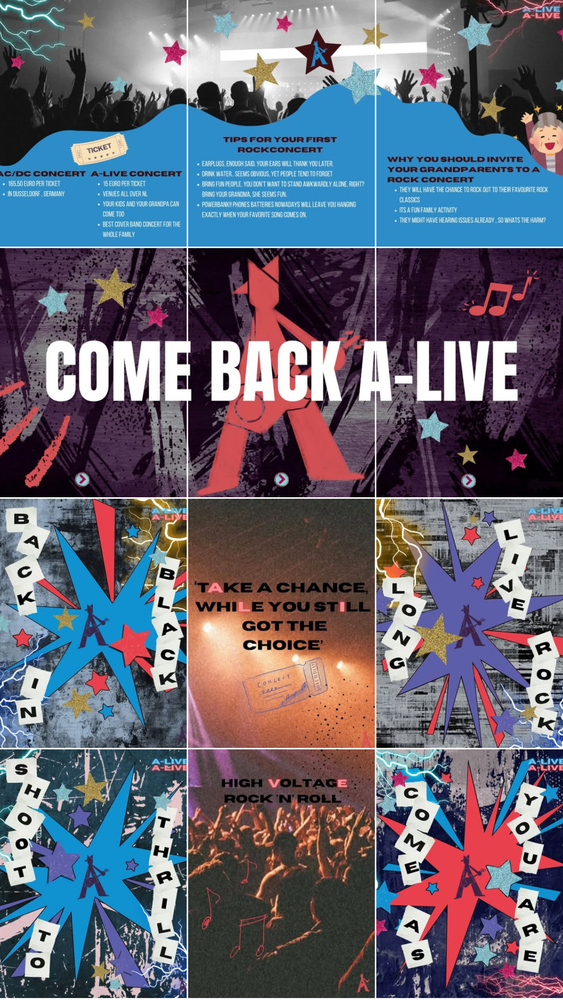
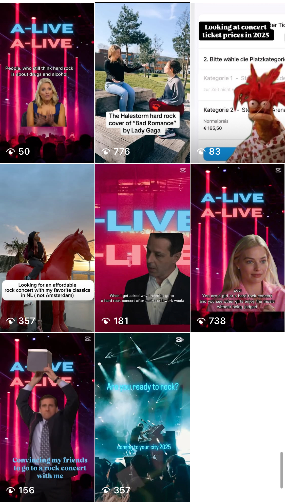
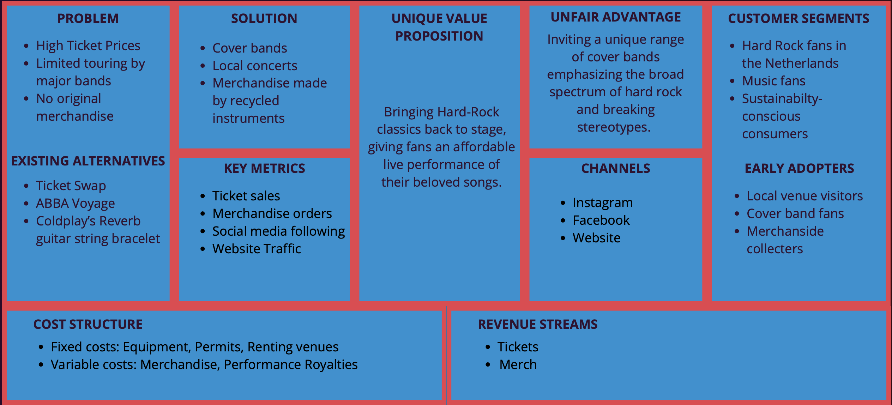
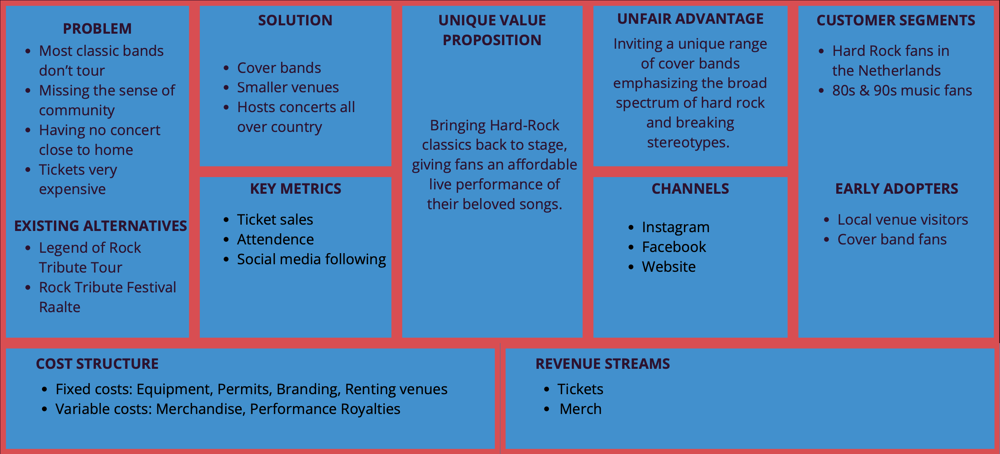
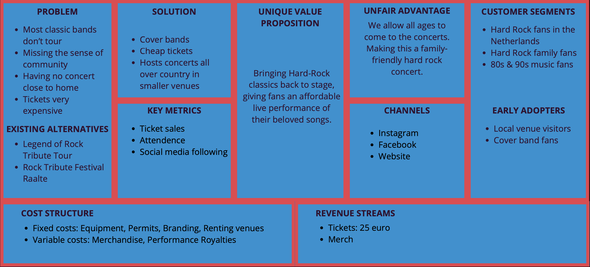

General Information
This branded website is publicly available at buas-media-interactive.github.io/my-website (please change text and hyperlink destination)
This website was created by… (only students listed below will be graded!)
This website was created by:
- Daphne Spruijt (ID: 231223)
- Daria Vander (ID: 233437)
- Jennifer Sebel (ID: 230927)
- Judesa Siregar (ID: 230945)
Content
| # | Student ID | Value | Name and link of content |
|---|---|---|---|
| 1. | 233437, 231223 | Marketing | Link to Marketing |
| 2. | 230927 | Management | Link to Management |
| 3. | 231223, 230945 | Production | Link to Production |
| 4. | 233437, 231223, 230927, 230945 | Values | Link to About us |
Production
Design Elements
Please provide a list of design elements alongside their justifications:
-
A colour scheme (with HTML colour codes, which must be consistent with your final website)
— see the example below from the BUas brand book:
- #311131 Individuality and uniqueness – It's unexpected in a rock palette, which reflects your brand’s commitment to doing things differently.
- #12447E Mature and introspective – Appeals to fans who appreciate the soulful, emotional side of rock—blues influences, lyrical depth, etc.
- #5043DE Mystery and depth – Echoes the layered sound of hard rock—deep, emotional, and moody.
- #0E92D2 Electricity and energy – Captures the pulse of amplified guitars, flashing lights, and the charged atmosphere of a rock concert.
- #EA404D Symbol of power and passion – Represents the raw energy, aggression, and bold attitude that define hard rock music and its fans.
- Font choices
- The structure of the navigation and content and interface paterns
We use bold, heavy fonts to visually echo the raw power and intensity of hard rock music. These fonts command attention—just like a guitar riff or a drum solo. Their weight and presence mimic the loudness and rebellion associated with rock culture. When fans see these fonts, they don’t just read them—they feel them. To balance the intensity, we pair the bold fonts with simpler, clean fonts from the same type family. This maintains visual harmony while offering contrast that supports readability and structure. It lets us highlight band names, dates, or call-to-actions without overwhelming the eye. Using fonts from the same family ensures a cohesive look across all our assets. Even with contrast, the design feels intentional and professional—like a band where each member has their own flair, but they still play in sync.
Our home page consists of a banner and an explanation of our brand right underneath it. With the explanation of our brand at the top of the page people will understand our brand before scrolling ahead and finding the cards with all the upcoming events in local cities. These cards also include a button leading to more information of the venue itself. We allow users to be directed to the about us page for further information about our brand including our values and vision. We used a carousel to display our values as it is an interactive way of putting images and the values together to better showcase what these values mean to us. We also included a short explanation of each value for audiences to better understand the meaning. At the bottom of each page, we have a short banner consisting of two columns including some contact information and our Instagram, making it easy and inviting for users to contact us. This also helps to push our reach objective of unique Instagram accounts. The colours we used on our website were taken from our colour palette. Our primary colour used is deep purple, our secondary colour is red, lastly blue is the colour used for smaller details. This is also reflected in the banner on top of our page, these are the colours we choose for our brand, and we like to keep this consistency throughout our website and reinforce the colours and the meaning it holds for our brand like mentioned before.
Credits
Please provide links and/or credits for third-party elements including:
- HTML templates if these are different from this one (buas-media-interactive/prj4-group-template)
- The source code for UX patterns other than the ones provided by the “Bootstrap” library (see getbootstrap.com/docs for a list of such patterns)
- Images that were not produced by students themselves, including when crediting is not mandatory (in other words, we ask you to credit Unsplash images)
Testing Report
Please write about…
- Your testing goals – in other words, what you are trying to learn about your website?
- Your testing methods, which includes information about:
- The test’s participants (number, match with target audience, etc.)
- The test’s setting (which material is used, is it done remotely, on campus, at home, etc.)
- The test’s protocol (what instructions are given, how it is recorded, etc.)
- Your testing results, which includes information about:
- Positive and negative aspects of the UI/UX that have been identified, ranked by importance.
- Improvements that have been implemented on the final website (or that would be implemented if doing so would be too complex)
Marketing
Context of campaign and promotional activities
For our campaign, we focused on promoting our hard rock cover band concerts mainly on Instagram. We advertised on Instagram because that is where most of our target audience, and therefor also our persona, is; young people from 16 to 35 years old who are interested in music, memes, and short videos.
The goal of the campaign was to introduce our brand and generate hype for our concerts in the Netherlands. Our brand is all about bringing back hard rock classics with amazing cover bands, now that a lot of the original artists do not tour anymore or are extremely expensive. We want to keep hard rock alive by electrifying it with renewed energy and make sure that future generations can experience this energy of live hard rock music.
In order to stand out, we made funny and relatable Instagram Reels. They were centered around real frustrations people have with concert culture like outrageous ticket prices, age limits, or not being able to watch their favorite hard rock bands live anymore. We used humor to communicate that our events are different: we are welcoming, there are no age limits, and the vibe is just fun and great music.
Link to the A-Live Content CalenderThe message of our campaign:
- We understand your frustrations with expensive ticket prices, so we created an event for you.
- Our event is welcoming to all ages and genders, so feel free to invite your grandma
- We love rock as much as you do.
Target Audience
Our target audience is hard rock and classic rock fans in their early 20s in the NL. Their main content consumption habit is scrolling through reels page. Their main engagement behavior is sharing reels with their contacts. They mostly use Instagram as their main social media platform. They follow music-related accounts, such as concert venues and Ticketmaster, to be updated about upcoming events. Some of them may follow their favourite bands or cover bands. Our event is not age-restricted, so we wanted to create family-friendly content, not the stereotypical bar aesthetic of hard rock. Our content aesthetic is gender-neutral, according to our values of “Come as You Are” and “Long Live Rock n Roll”. That means our target audience needs to feel welcome at our event and that is the message our content needs to convey.
Our persona
Our persona is Mark, a
- A Dutch 27 y/o
- Middle class, annual salary of €34,300
- Listens to classic rock songs
- Is fan of classic rock bands like KISS, Metallica and AC/DC.
- Difficulties visiting concerts, because tickets are expensive and most concerts are in Amsterdam.
- Believes that music comes above artists
- Enjoyes live music; Thrill of the crowd, energy of performances
- Doesn't feel a sense of community in general, only at concerts
We decided to focus on Instagram as our main social media platform, because we wanted to achieve a larger audience through reels, as our main media tactic. As the campaign continued, we were reassured in our decision. Reels are relatively easy to make, and they can get a high reach.
The persona of Mark inspired content for our reels. We turned his frustrations and struggles into relatable content, that he might find funny. For example, the struggle of finding friends to go to a concert with, that Mark has, has inspired the Michael Scott reel with the fan favorite character from the office.
The second tactic was to use coherent grid posts for visual aesthetics of the account. In two of the posts, we hid an easter egg, our brands name, hidden in the lyrics on the poster. We wanted to stand out, and to create engagement with the target audience by adding in a challenge to find the eater egg.
Objectives by April 11th.
Reach objective: Our reach objective is to reach 100 unique Instagram accounts.
Affect objective
- Make people laugh
- Make people curious about our brand
Response objective:
- 100 likes total on our reels
- 1000 views on a reel
- View rate past the first three seconds on a reel more than 50%
Learning Points
CapCut was a convenient instrument to find meme templates and create original reels. Our Barbie reel from CapCut reached 93.4% of non-followers, 552 accounts, and had 738 views. This was our best result overall, and this taught us that meme reels can be an efficient tool to achieve our reach goal. The second reel that got a high result was the PopTart reel, which got good views because of our family and friends. However, it still reached 456 accounts and 69.4% of non-followers, which is a decent result.
The instruments we used to create content were Cap Cut, Canva for the posts and TikTok to search for sounds and create reels. The learning point here is that those tools are effective, easy to learn and use and allow for a lot of creativity. Even without resources, it is possible to create content through those tools. Cap Cut had a lot of templates we could use, it was easy to learn and to try. Canva is a great tool for creating posters, especially if you need to collaborate with other group members. It was convenient to use the post format and story format.
The issue we faced as a business account is that we were not allowed to use music from the famous rock bands. This limitation did not allow us to create more engaging posts with the actual AC/DC songs. Instead, we used free to use rock music from artists with the Instagram license. Even though we did not have any product content to promote, we found a way to still promote the event by using posters and reels.
The main learning point for us was that if we would do another campaign, we would create a content creation calendar, to dedicate time for content.
What worked well
- The reels worked well to reach the audience. We almost achieved our reach goal through reels alone. We have achieved our affect objectives for the beginning of campaign. The reels made people laugh, which is a good way to get people engaged.
- We also saw a larger reach for the grandma poster, which worked better than expected. It also received more interest from followers. We can utilize the idea behind the concept to create a full-scale campaign, filming reels with an actual grandma and making her almost an ambassador for the brand.
- The PopTart reel with a Tik-Tok sound had an average watch time of 8 seconds, which is a good result. We have reached our response objective to get a reel with a view rate past first three seconds more than 50% with two reels, the Barbie and the PopTart.
What did not work well
- The reel that was posted at 8 in the morning did not do well. This was a learning point and for the rest of the campaign we only posted after 18:00.
- It takes time to find the right footing with the type of humour and finding CapCut template that works for reels. Because of that, we did not have a coherent content schedule for creating reels.
- The initial idea to use rock fun facts did not work well, because there is not much you can find about rock bands.
What would we do differently?
- Create a separate schedule for content creation. It takes time and resources to create engaging content, even if it's just finding templates on Cap Cut. As we have learned, reels with real-life people got a higher exposure, so with proper planning we could have utilized this more. Just using content posting calendar, without a planning for content itself, was not as successful as it could have been. With a planning calenddar we could have created more content and posted more often.
- Post all the reels only after 18:00, since it affects the account reach. Posting too early in the morning sunk one of our reels.
- If we had the resources, we would have created more original content with the cover bands themselves. In the interviews, our target group has expressed interest in content with the cover bands. Before going to the concert, they would check the Instagram to see how the bands play and how the event feels. If we had a real cover band, we would have created more content introducing the band and the music they play. Videos with live music covers have the potential to reach more people, especially of you use the sound to create more reels and start your own trend.
- Create a full-scale marketing campaign “Rock Grandma”. The idea came too late in the campaign to utilize it to the full scale. The rock grandma campaign aligns with our brand values and is a unique concept that has a potential for a full-scale campaign.
Future Planning
The “Rock Grandma” campaign
The campaign involves a real-life actress grandma as our brand ambassador. The campaign will include promotional photoshoots, reels and media content. The message behind the campaign “Rock at any Age” reinforces the ageless joy of rock. We want to make the actress the face of the campaign and our brand. The content will be funny and light-hearted, because our effect objective would be to make people feel like they want to reach out to their own grandma.
Disclaimer: The future planning is with a theoretical cover band and venue available, as well as the actress for the campaign.
Link to the Campeign Content CalenderThe campaign involves a real-life actress grandma as our brand ambassador. The campaign will include promotional photoshoots, reels and media content. The message behind the campaign “Rock at any Age” reinforces the ageless joy of rock. We want to make the actress the face of the campaign and our brand. The content will be funny and light-hearted, because our effect objective would be to make people feel like they want to reach out to their own grandma.
Professionalism
Posts
- 
-
Reels
 -
Are You Excited Results
This post was posted on March 17 2025. Created in CapCut. Introduces our brand and our logo. In terms of content, since we could not use actual promotional photography for the event, we created a reel with free to use images and music to give the audience a feeling of what our event would be like. For this post we have the following statistics: 13 likes, 357 views. Unfortunately, the rest of the information not available because we did not had an professional account back then.
Convincing My Friends Results
This post was posted on March 20 2025. Created using a CapCut template. “The office” memes are popular with our target age group; the meme is relatable to concert lovers. For this post we have the following statistics: 5 likes, 156 views, 64.5% non-followers, Accounts reached 107, Accounts engaged 5, Followers 0.
Barbie Meme Results
This post was posted on March 30 2025. Created with a CapCut template. Appealing to our target audience, communicates our value of inclusion for women. This meme performed the best up until that moment. The learning outcome is that CapCut meme templates are a valuable instrument in reaching more people. The reason this meme did so well is how easy and relatable it is. For this post we have the following statistics: 12 likes 738 views, 91.6% non-followers, Accounts reached 560, Accounts engaged 14, Followers 0.
Succession Results
This post was posted on April 1 2025. Created with a CapCut template, this reel is using a meme from the HBOs hit show Succession. For this post we have the following statistics: 3 likes, 181 views, 84.4% non-followers, Accounts reached 147, Accounts engaged 3, Followers 0.
On a Horse Results
This post was posted on April 2 2025. An original reel with a funny caption. The purpose behind the filming on a huge red horse was to spark interest “ Hey, where is this huge red horse?” as well as the idea just being funny. For this post we have the following statistics: 8 likes, 357 views, 66.9% non-followers, Accounts reached 230, Accounts engaged 8, Followers 0.
Tickets Results
This post was posted on April 3 2025. CapCut meme template. Learning outcome: the post underperformed. It was posted early in the morning at 8, which sank it in the reels page. What we did differently? We only posted at 18:00 to maximize the reach. For this post we have the following statistics: 4 likes, 83 views, 36.8% non-followers, Accounts reached 38, Accounts engaged 4, Followers 0 .
Poptart Results
This post was posted on April 4 2025. CapCut meme template. Sound from TikTok, filmed with our groupmates. Learning outcomes: The reel involving our own faces received more interactions from our family and friends. However, it also did well overall. For this post we have the following statistics: 26 likes, 776 views, 69.4% non-followers, Accounts reached 456, Accounts engaged 29, Followers 1 .
Ted Lasso Results
This post was posted on April 10 2025. Underperformed, perhaps the fact that we posted the same meme in the stories before posting it in the feed did not get enough exposure. The other reason could that the template itself is too niche and is not trending right now. The template is also from a show Ted Lasso, that is more popular in the USA, rather than Europe. For this post we have the following statistics: 3 likes, 50 views, 10.6% non-followers, Accounts reached 23, Accounts engaged 3, Followers 0 .
Link to our Instagram Reels page - Live Hard Rock Concert Experiences: We will organize local events featuring carefully selected cover bands that represent the full spectrum of hard rock. These concerts bring iconic music back to life in an affordable and intimate setting, helping fans relive their favorite songs while discovering new acts.
- Music-Focused Merchandise: We create unique merchandise that highlights and celebrates music by using recycles instrument, such as guitar strings and drumsticks. These items connect fans to the music they love while promoting sustainability, making them both meaningful and eco-friendly. This aligns with our brand identity of combing creativity and authenticity while keeping music as the focus.
- High Ticket Prices:The tickets sold for live performances are often too expensive, making it di5icult for fans to come and enjoy their favorite music.
- Limited Touring by Major Bands: Most of the biggest and most popular hard rock bands are no longer or rarely touring. This leaves fans with fewer opportunities to see their favorite acts live. When these bands do tour, they only go to a few locations, making fans must travel from far to see their favorite artists.
- No Original Merchandise: The current merchandise options are often generic and outdated. There is not much innovation or creativity used in the creation of the merchandise.
- Ticket Swap: An alternative solution for high ticket prices is Ticket Swap. This ticket resale platform allows users to sell or buy second-hand concert tickets. These are often sold at lower prices than when they first got sold. This helps fans find more affordable ways to attend concerts. However the availability is often limited, and the sellers of these tickets are not always reliable.
- ABBA Voyage: An alternative solution for the limited touring by major bands is a concert experience like ABBA Voyage. As a creative response to artist not touring anymore, ABBA Voyage offers a real-life concert experience for fans to attend. At these concert lifelike holograms perform the greatest ABBA hits. This gives fans a way to enjoy performances from retired or dead artists.
- Coldplay’s Reverb guitar string bracelet: An alternative solution for no original merchandise is merchandise like Coldplay’s reverb guitar strings bracelet. This is an example of more innovative merchandise. The bracelets are made from guitar strings that were used by Coldplay’s band members during their latest tour. This adds a unique and personal touch to fan merchandise.
- Cover Bands: Since major hard rock bands rarely or do not at all tour anymore, we aim to bring the live music loved by so many fans by organizing high-quality cover band performances that capture the energy and sound of iconic acts.
- Local Concerts: To make attending hard rock concerts more accessible and affordable, our brand will organize smaller hard rock events in local venues with lower ticket prices. This gives fans more opportunities to enjoy live music without the high costs of major concerts.
- Merchandise from Recycled Instruments: To bring innovation to the merchandise scene, our brand will design and sell unique hard rock merchandise made from recycled musical instruments. This will not only offer fans original items, but it also promotes sustainability in the music industry.
- Hard Rock Fans in the Netherlands: These are passionate music lovers who follow the genre closely, attend concerts when possible and often buy related merchandise.
- Music fans: Music fans are open to discovering new bands or alternative concert experiences and merch connect to their love of music.
- Sustainability-conscious consumers: People who value eco-friendly products and are attracted to unique, upcycled merchandise with meaningful backstory.
- Local venue visitors: Local venue visitors regularly attend events at smaller local venues and are always looking for new live music experiences. They would attend our concerts out of curiosity.
- Cover band fans: Fans who actively follow cover band and appreciate the nostalgic experience they offer. They are more open to alternative concert formants and are familiar with the concept.
- Merchandise collectors: Passionate music fans who love collecting unique and meaningful items, especially limited edition or artist related merchandise. They are likely to be drawn to our recycled instrument-based products for their originality and story.
- Our brand’s unique value proposition would be that we are bringing Hard-Rock classics back to stage, giving fans an affordable live performance of their beloved songs.
- Our brand offers a unique and carefully curated mix of cover bands that highlight the full spectrum of hard rock. By breaking stereotypes and embracing diversity within the genre, we create a concert experience that feels fresh and deeply authentic. Combined with our sustainable merchandise made from real instruments, we offer fans a connection that goes beyond the bands and truly connects them to the music.
- Instagram: On Instagram our brand can connect with a younger, more visually driven audience by sharing concert highlights, band features, merch drips and behind the scenes content of the concerts.
- Facebook: Facebook can be used to engage with local music communities, promote events and connecting with an older generation.
- Official Website: The official website of our brand will serve as a central hub for all event information, ticket sales and an online store for our exclusive merchandise.
- Ticket sales: The number of tickets sold per event will monitor the audience reach and demand for live performances.
- Merchandise orders: The total and repeat merchandise orders through our webshop will help us evaluate interest in and satisfaction with our products.
- Social media following: The growth in followers on the social media platforms we use (Instagram and Facebook) will measure our brand’s visibility and community engagement.
- Website Traffic: The number of unique visitors spending time on the website will show us the how many people are interested in our brand and went to explore the details of our events and merch.
- Ticket Sales: Revenue generated from selling tickets to local concerts and cover band performances.
- Merchandise Sales: Income from selling exclusive and sustainable merchandise from recycled instruments. This stream includes both online and on-site sales at events.
- Fixed Costs:- Equipments - Permits - Renting venues
- Variable costs:- Merchandise - Performance royalties
- Most classic bands do not tour: Most of the biggest and most popular hard rock bands are no longer or rarely touring. This leaves fans with fewer opportunities to see their favorite acts live. When these bands do tour, they only go to a few locations, making fans must travel from far to see their favorite artists.
- Missing sense of community: Several fans expressed that being a hard rock fan can feel isolating. There are fewer spaces or events where fans can regularly connect with like-minded people, share their passion and feel part of a larger community.
- Having no concert close to home: Hard rock events are often concentrated in major cities, making it difficult for fans living in smaller towns or rural areas to attend. The effort, time and cost of traveling long distances to see a concert can be discouraging and inaccessible for many.
- Tickets are very expensive: The cost of attending hard rock concerts and events is often too high, especially for younger fans or those on a budget. This limits access and can make the live music experience feel exclusive and unaffordable.
- Legend of Rock Tribute Tour: This is a touring event featuring tribute bands that perform songs from legendary rock artists. It provides fans with a live music experience that is no longer available from the original bands. However, they only tour in the south and east of the Netherlands.
- Rock Tribute Festival Raalte: This is an annual festival in the Netherlands that brings cover bands together in one location (Raalte). It offers hard rock fans a full day or weekend of live rock music.
- Cover Bands: We work with talented and diverse cover bands that bring the music of classic hard rock icons back to life. This helps fans experience the songs they love live, even when the original bands no longer tour.
- Smaller venues: By organizing concerts in smaller and more local venues, we create an accessible and a5ordable atmosphere where fans can enjoy live music and connect with each other and other fans from their own area. This helps building a stronger sense of community and hosting in smaller venues can make tickets prices lower.
- Hosts concerts all over country: Instead of limiting events to big cities or only parts of the country, we bring the concerts to multiple regions across the Netherlands. This ensures that fans outside major cities also have the chance to attend without long travel times or high additional costs.
- Local Venue Visitors: Local venue visitors regularly attend events at smaller local venues and are always looking for new live music experiences. They would attend our concerts out of curiosity.
- Cover band fans: Fans who actively follow cover band and appreciate the nostalgic experience they offer. They are more open to alternative concert formants and are familiar with the concept.
- Hard Rock fans in the Netherlands: Individuals of all ages who are passionate about hard rock music, particularly fans who feel underserved by current live music landscape.
- Fans of 80s and 90s music: People who have a strong nostalgic connection or people who just love 1980s and 1990s music will be attracted to our events, since we bring the biggest hard rock music which comes from that time come back to live. These fans are often looking for ways to relive the energy and sound of that era through live experiences.
- Instagram: On Instagram our brand can connect with a younger, more visually driven audience by sharing concert highlights, band features, merch drips and behind the scenes content of the concerts.
- Facebook: Facebook can be used to engage with local music communities, promote events and connecting with an older generation.
- Official Website: The official website of our brand will serve as a central hub for all event information, ticket sales and an online store for our exclusive merchandise.
- Ticket sales: The number of tickets sold per event will monitor the audience reach and demand for live performances.
- Social media following: The growth in followers on the social media platforms we use (Instagram and Facebook) will measure our brand’s visibility and community engagement.
- Website Traffic: The number of unique visitors spending time on the website will show us the how many people are interested in our brand and went to explore the details of our events.
- Ticket Sales: Revenue generated from selling tickets to local concerts and cover band performances.
- Merchandise Sales: Income from selling exclusive merchandise from every concert. This stream includes both online and on-site sales at events.
- Fixed Costs:- Equipment • Permits • Renting venues
- Variable costs: • Merchandise • Performance royalties
- Most classic band do not tour: Most of the biggest and most popular hard rock bands are no longer or rarely touring. This leaves fans with fewer opportunities to see their favorite acts live. When these bands do tour, they only go to a few locations, making fans must travel from far to see their favorite artists.
- Missing sense of community: Several fans expressed that being a hard rock fan can feel isolating. There are fewer spaces or events where fans can regularly connect with like-minded people, share their passion and feel part of a larger community.
- Having no concert close to home: Hard rock events are often concentrated in major cities, making it difficult for fans living in smaller towns or rural areas to attend. The effort, time and cost of traveling long distances to see a concert can be discouraging and inaccessible for many.
- Tickets are very expensive: The cost of attending hard rock concerts and events is often too high, especially for younger fans or those on a budget. This limits access and can make the live music experience feel exclusive and unaffordable.
- Legend of Rock Tribute Tour: This is a touring event featuring tribute bands that perform songs from legendary rock artists. It provides fans with a live music experience that is no longer available from the original bands. However, they only tour in the south and east of the Netherlands.
- Rock Tribute Festival Raalte: This is an annual festival in the Netherlands that brings cover bands together in one location (Raalte). It offers hard rock fans a full day or weekend of live rock music.
- Cover Bands: We work with talented and diverse cover bands that bring the music of classic hard rock icons back to life. This helps fans experience the songs they love live, even when the original bands no longer tour.
- Smaller venues: By organizing concerts in smaller and more local venues, we create an accessible and affordable atmosphere where fans can enjoy live music and connect with each other and other fans from their own area. This helps building a stronger sense of community and hosting in smaller venues can make tickets prices lower.
- Hosts concerts all over country: Instead of limiting events to big cities or only parts of the country, we bring the concerts to multiple regions across the Netherlands. This ensures that fans outside major cities also have the chance to attend without long travel times or high additional costs.
- Local Venue Visitors: Local venue visitors regularly attend events at smaller local venues and are always looking for new live music experiences. They would attend our concerts out of curiosity.
- Cover band fans: Fans who actively follow cover band and appreciate the nostalgic experience they offer. They are more open to alternative concert formants and are familiar with the concept.
- Hard Rock fans in the Netherlands: Individuals of all ages who are passionate about hard rock music, particularly fans who feel underserved by current live music landscape.
- Hard Rock family fans: Families who enjoy hard rock music together and are looking for age-inclusive live music experiences.
- Fans of 80s and 90s music: People who have a strong nostalgic connection or people who just love 1980s and 1990s music will be attracted to our events, since we bring the biggest hard rock music which comes from that time come back to live. These fans are often looking for ways to relive the energy and sound of that era through live experiences.
- Instagram: On Instagram our brand can connect with a younger, more visually driven audience by sharing concert highlights, band features, merch drips and behind the scenes content of the concerts.
- Facebook: Facebook can be used to engage with local music communities, promote events and connecting with an older generation.
- Official Website: The official website of our brand will serve as a central hub for all event information, ticket sales and an online store for our exclusive merchandise.
- Ticket sales: The number of tickets sold per event will monitor the audience reach and demand for live performances.
- Social media following: The growth in followers on the social media platforms we use (Instagram and Facebook) will measure our brand’s visibility and community engagement.
- Website Traffic: The number of unique visitors spending time on the website will show us the how many people are interested in our brand and went to explore the details of our events.
- Ticket Sales: Revenue generated from selling tickets to local concerts and cover band performances. This includes standard admission pricing, with potential for tiered pricing (e.g. early bird, VIP experiences) as the brand grows. Tickets would be sold for 25 euros per ticket. This would give us a profit of 25 – 19,45 = 5,55 euros per ticket.
- Merchandise: We offer exclusive, special-edition merchandise for each concert venue. This includes items that are uniquely designed for that specific event. These venue-specific items help strengthen the fan experience and provide a valuable souvenir from each performance.
- Equipment = 900 euros (Thomann, 2025)
- Permits = 2282,10 euros (Gemeente Amsterdam, 2025)
- Renting venues = 2479 euros (Het Concert Gebouw, 2025)
- Merchandise shirts = 2,20 euros per shirt (Thrive, 2025) We would have 200 shirts available to buy per concert. 200 x 2,20 = 440 euros
- Performance royalties = 2000 euros per band (Hergert, 2025) We would have three bands per concert. 2000 x 3 = 6000 euros.
- How did you get into hard rock?
- What makes hard rock special?
- Do you feel part of the hard rock community?
- Do you have friends/family who like hard rock as well?
- Are you into hard rock events? Why? How often?
- What do you like and dislike at hard rock events?
- Can you describe your best and worse hard rock event?
- What makes you want to go (or not go) to a hard rock event?
- Describe the perfect hard rock event
- What is something you miss in the hard rock community?
- What do you think of modern hard rock?
- How much do you prefer live music? And why?
- Most hard rock fans got into the music through relatives
- Most hard rock fans did not feel part of a community
- Most hard rock fans shared their passion with family members
- Most hard rock fans thought that there are not many concerts to attend
- Most concert tickets are expensive
- Most concerts are located far from home
- Most hard rock fans prefer older music from 80s and 90s
- Most hard rock fans do not like modern hard rock
- Most hard rock fans prefer hearing live over pre-recorder
- Hard rock fans are open to listening to cover bands
- Music is more important than the artist
- What is your first impression on our event?
- Would you enjoy cover bands at our event?
- What do you think about having no age restriction?
- What do you think about hosting these events in local and therefor small venues?
- What do you think this event is missing?
- Do you think these aspects will help you feel a sense of community among other hard rock fans?
- What do you think is a suitable price for a ticket?
- What time do you prefer this event will take place?
- What would you change about this event?
- Do you have any comments/concerns left?
- Hard rock fans like our event
- Cover bands are a good solution for lack of major band touring
- Fans like no age restriction but think there should be some kind of protection/guidance for children
- Fans like that events would be hosted close to home, would encourage them to buy ticket
- The local events would help create community
- Fans would prefer evening concerts
- Fans would pay around 25 euros for a ticket
- Most classic hard rock bands do not tour: After conducting interviews with hard rock fans and trying to find concerts online. Our assumption of a lack of class hard rock band tours got confirmed. Fans told us they miss their favorite bands. This validated our assumption and confirmed the relevance of offering live performances through high-quality cover bands.
- A desire for local and accessible concert experiences: Through the interviews and the feedback we got in class fans expressed frustration with the lack of concerts near their hometowns and especially those that are affordable and family friendly. This supports our plan to host smaller concerts across various regions of the Netherlands.
Shown in the picture above is our instagram home page. Here are our 12 posts devided over three grids which are posts that are connected to each other.
NOTE: All of the following numbers from our Instagram Page are last updated on April 16 2025.
Our first 6 posts are showing our four values; Come As You Are, Shoot To Thrill, Long Live Rock, and Back In Black. These values are all based on hard rock songs. These posts are created in Canva and includes our original logo. We created an original poster for each of our values to introduce our brand, using the colour scheme and logo. We wanted our posters to look like retro rock album covers, so they are made in a collage style.
Come As You Are Results
This post was posted on March 19 2025. Our Results from our this post are as followed as on April 16 2025: 16 likes, 150 views, 24.7% non-followers, Accounts reached 81, Accounts engaged 18, Profile visits 6.
High Voltage 1/2 grid Results
This post was posted on March 24 2025. Our Results from our this post are as followed as on April 16 2025: 9 likes, 93 views, 16.1% non-followers, Accounts reached 51, Accounts engaged 9, Profile visits 7.
Shoot To Thrill Results
This post was posted on March 26 2025. Our Results from our this post are as followed as on April 16 2025: 8 likes, 65 views, 12.3% non-followers, Accounts reached 44, Accounts engaged 8, Profile visits 4.
Long Live Rock Results
This post was posted on March 28 2025. Our Results from our this post are as followed as on April 16 2025: 5 likes, 56 views, 19.6% non-followers, Accounts reached 40, Accounts engaged 5, Profile visits 3.
Take Your Chance 2/2 grid Results
This post was posted on March 29 2025. Our Results from our this post are as followed as on April 16 2025: 4 likes, 57 views, 10.5% non-followers, Accounts reached 42, Accounts engaged 4, Profile visits 1.
Back In Black Results
This post was posted on March 31 2025. Our Results from our this post are as followed as on April 16 2025: 8 likes, 54 views, 7.4% non-followers Accounts reached 33 Accounts engaged 8 Profile visits 4.
Our second grid includes a 3 posts grid with our logo included. The text: Come Back Alive, refers to our vision to reignites the power of hard rock classics in a world where original artists no longer perform them. We decided on making it playful because all ages are welcome to our events.
Come Back Alive 1/3 grid Results
This post was posted on April 2 2025. Our Results from our this post are as followed as on April 16 2025: 2 likes, 41 views, 17.1% non-followers, Accounts reached 29, Accounts engaged 2, Profile visits 2.
Come Back Alive 2/3 grid Results
This post was posted on April 4 2025. Our Results from our this post are as followed as on April 16 2025: 3 likes, 47 views, 8.5% non-followers, Accounts reached 27, Accounts engaged 3, Profile visits 3.
Come Back Alive 3/3 grid Results
This post was posted on April 5 2025. Our Results from our this post are as followed as on April 16 2025: 2 likes, 40 views, 17.5% non-followers, Accounts reached 26, Accounts engaged 2, Profile visits 2.
Our last grid includes a 3 posts grid with 3 concepts about our brand: Everyone is welcome, Tips for a concert, and a comparison with a real hard rock concert.
Why You Should Invite Your Grandparents post 1/3 Results
This post was posted on April 7 2025. We decided to go a funny poster about grandparents because it highlights the no age restriction for the event and correlates with our effect objective. This post gave us an idea for the theoretical next marketing campaign “Rock Grandma”, which can be used to promote the event. This concept is unique, funny and light-hearted and can appeal to our audience. For this post we have the following statistics: 5 likes, 146 views, 43.8% non-followers, Accounts reached 101, Accounts engaged 6, Profile visits 4.
Tips For Your First Rockconcert post 2/3 Results
This post was posted on April 8 2025. For the second poster, we wanted to try a new approach. It is still a poster that is part of a 3-post grid for coherency and visual aesthetics. We have tips listed such as bringing your earplugs and powerbank, to drink enough water, and we included a line “bring your grandma” to continue the reference to the campaign. For this post we have the following statistics: 2 likes, 40 views, 5.0% non-followers, Accounts reached 29, Accounts engaged 2, Profile visits 3.
Concert Comparison post 3/3 Results
This post was posted on April 9 2025. The next AC/DC concert in Europe is in Dusseldorf and its 165,50 euro per ticket. We were inspired by the WowFoods post comparing American pancakes to cottage cheese pancakes. We decided to compare the expensive concert to our event, highlighting our main selling points. Our event is affordable, close to home and anyone can come. For this post we have the following statistics: 2 likes, 68 views, 4.4% non-followers, Accounts reached 41, Accounts engaged 2, Profile visits 2.
Link to our Instagram Home pageShown in the picture above is our Instagram reels page. Here are our 8 reels posted, this because we liked to keep the visual aesthetic on the home page, but concluded reels perform better.
NOTE: All of the following numbers from our Instagram Page are last updated on April 16 2025.
Management
Lean Canvas 1
Services/products
Our brand would offer two main products that directly reflect our unique value proposition and brand identity:
Problem
Based on our own research and observations during the brainstorm phase, our team identified three key problem hard rock fans may face. We explored websites of online communities, ticket platforms and hard rock bands to find gaps in this market. These are the problems we noticed:
Existing Alternatives
After identifying our main problems, we explored existing solutions that are currently available. For each problem, we found a notable existing solution:
Solution
To address the problems identified, in this stage our brand is brainstorming the following solutions.
Customer segments
We predict that these target groups would be our customers:
Early Adopters
Our ideal early adopters would be:
Unique value proposition
Unfair advantage
Channels
We are planning on reaching our target audience through the following main channels:
Key metrics
To measure the success and growth of our brand experience, we will track the following key performance indicators:
Revenue streams
Our brand expects to earn revenue from two main sources:
Cost structure
For the Cost Structure with the idea we have so far we expect the following to be our costs:
Lean Canvas 2
After conducting interviews with eight unique hard rock fans, we discovered that the main challenges they face differ slightly from what we initially assumed. By listening to their personal experiences and frustrations, we were able to identify the most relevant problems from a fan’s perspective. These insights have helped us refine our focus and our brand is now committed to solving the issues that matter most to the community.
Services/products
Our brand offers hard rock concerts performed by high-quality cover bands, who will bring iconic hard rock classics come back alive on stage in intimate local venues across the Netherlands. Additionally, we will sell merchandise connected to the venue as a second revenue stream.
Problem
After talking to 8 unique individuals about what they struggle with as hard rock fan these are the problems, we have concluded are most important and our brand wants to solve these problems:
Existing Alternatives
During our research we identified a few existing initiatives that aim to offer hard rock live events and concerts like our brand. However, both initiatives we found are not across the Netherlands but only in one or a few regions. Our brand aims to build on these ideas while making them more local, affordable and community centered.
Solution
Based on our brand’s research and responses from fans, our brand aims to offer the following solutions to the problems faced by hard rock fans:
Early Adopters
The early adopters of are brands are most likely the individuals to engage from the start because they have a connection with our concept already.
Customer segments
Our brand is focused on serving the following customer segments:
Unique value proposition
Our brand’s unique value proposition is that we are bringing Hard-Rock classics back to stage, giving fans an affordable live performance of their beloved songs.
Unfair advantage
Our brand’s strength lies in our carefully curated and diverse selection of cover bands that represent the full spectrum of hard rock.
Channels
We are planning on reaching our target audience through the following main channels:
Key metrics
To measure the success and growth of our brand experience, we will track the following key performance indicators:
Revenue streams
Our brand expects to earn revenue from two main sources:
Cost structure
For the Cost Structure we expect the following costs:
Lean Canvas 3
After conducting interviews with hard rock fans to see if our brand fits their wants and needs, our brand has made some final changes and has landed on our finalized service.
Services/products
Our brand offers hard rock concerts performed by high-quality cover bands, who will bring iconic hard rock classics come back alive on stage in intimate local venues across the Netherlands. Additionally, we will sell merchandise connected to the venue as a second revenue stream.
Problem
After talking to hard rock fans about what their struggles our, our brand has listed these as the most important problems we will help solve:
Existing Alternatives
During our research we identified a few existing initiatives that aim to offer hard rock live events and concerts like our brand. However, both initiatives we found are not across the Netherlands but only in one or a few regions. Our brand aims to build on these ideas while making them more local, affordable and community centered.
Solution
Based on our brand’s research and responses from fans, our brand will offer the following solutions:
Early Adopters
The early adopters of are brands are most likely the individuals to engage from the start because they have a connection with our concept already.
Customer segments
Our brand is focused on serving the following customer segments:
Unique value proposition
Our brand’s unique value proposition is that we are bringing Hard-Rock classics back to stage, giving fans an affordable live performance of their beloved songs.
Unfair advantage
We offer a hard rock concert that is fully family-friendly and open to all ages. By creating an including an inclusive atmosphere all generations can enjoy live hard rock music together. Other concerts do not offer this; therefore, we fill a unique gap in the market. This approach sets us apart from traditional concert and festivals that only cater to adults. However, all kids under 12 should be accompanied by an adult.
Channels
We are planning on reaching our target audience through the following main channels:
Key metrics
To measure the success and growth of our brand experience, we will track the following key performance indicators:
Revenue streams
To ensure we enough money from our concerts, our brand generates revenue through two main streams:
Cost structure
For the Cost Structure we expect the following costs:
Fixed Costs:
Total fixed costs= 900+2282,10+2479 = 5661,10 euros
Variable costs:
Total variable costs = 6440
Cost per unit:
-
1. Cost per ticket
(Total fixed costs + variable costs performance royalties)/tickets sold =
(5661,10 + 6000)/ 600 = 19,44 euros per ticket.
(We would have about 600 tickets available per concert).
Problem Interview conclusions
Problem Interview conclusions
For the problem interviews our team asked the following questions:
Based on these questions we got interesting answers from our interviewees. While we were listening back to the interviews, we wrote down remarks from interviewees that stood out or were helpful to give us extra insights. Here under you will see a list of the conclusions we could make based on these interviews:
Based on this information we decided to step away from our recycled merchandise idea, because it became clear to us that there was a big ask for good live music. Therefor we decided to focus on offering an affordable live music service for our second lean canvas.
Feedback from teachers and classmates in class
After a pitch of our brand in class our team got the feedback from teachers and students to make it a concert available for all ages. Since the usual age restrictions keep families away from attending these concerts. Based on this advice we decided to change our unfair advantage to the no age restrictions in lean canvas 3.
Solution Interview conclusions
For the solution interviews our team asked the following questions:
Based on these questions we got interesting answers from our interviewees. While we were listening back to the interviews, we wrote down remarks from interviewees that stood out or were helpful to give us extra insights. Here under you will see a list of the conclusions we could make based on these interviews:
Based on these answers we decided to make tickets 25 euros and keep all ages access. However, we decided to make adult guidance for kids until 12 mandatory, to protect their safety. Other than those changes from the solution interviews we could draw the conclusion that our brand and event fit the target audience well and that they are interested. Therefor we choose to not make any other big changes.
Validation of Assumptions
During the development of our Lean Canvas, our team made several key assumptions about our audience and their needs. The two most important assumptions we validated through research and interviews are:
Reflection on Trademark Choice
Our brand chose the name A-Live as a creative wordplay of bring music back “alive” and having is performed “live”. The name reflects our mission to revive hard rock classics though live performances and to make this genre come back to life. The tagline “We bring hard Rock back A-Live” reinforces our commitment to re-energizing the hard rock community in an accessible way.
We compared our brand concept with our two competitors The Legends of Rock Tribute Tour and Rock Tribute Festival Raalte. While they offer nice hard rock cover band events. Their events aren’t as inclusive as ours and they are not across the entire country like we are planning on doing. Our brand differentiates itself by being family friendly, affordable and community oriented, allowing hard rock fans of all ages to reconnect with the genre.
Work cited
Gemeente Amsterdam. (2025). Evenement organiseren. Retreived from Amsterdam: https://www.amsterdam.nl/ondernemen/evenement-organiseren/
Hergert, T. (2025). Event artist. What is an Event Artist? How much do event artists make? How to become one? Retreived from Empowerd Artists: https://www.empoweredartists.co/post/what-is-an-event-artist-how-much-do-event-artists-make-how-do-i-become-an-event-artist
Het Concert Gebouw. (2025). Tarieven zaalhuur. Retreived from Het Concert Gebouw: https://d35w1qwxagl33g.cloudfront.net/common/Tarieven-Zaalverhuur-Concert-2024-2025.pdf
Thomann. (2025). Thomann Practise Room Bundle 2. Retreived from Thomann: https://www.thomann.nl/thomann_practice_room_bundle_2.htm?srsltid=AfmBOopnD1vhFgrKb2xfPt8kC2QlF7BWWKYCMVkXUJHJxsoYnddzLI2B1Ik
Thrive. (2025). How much does it cost to make merch. Retreived from Thrive Screen Printing: https://thrivescreenprinting.com/how-much-does-it-cost-to-make-merch/